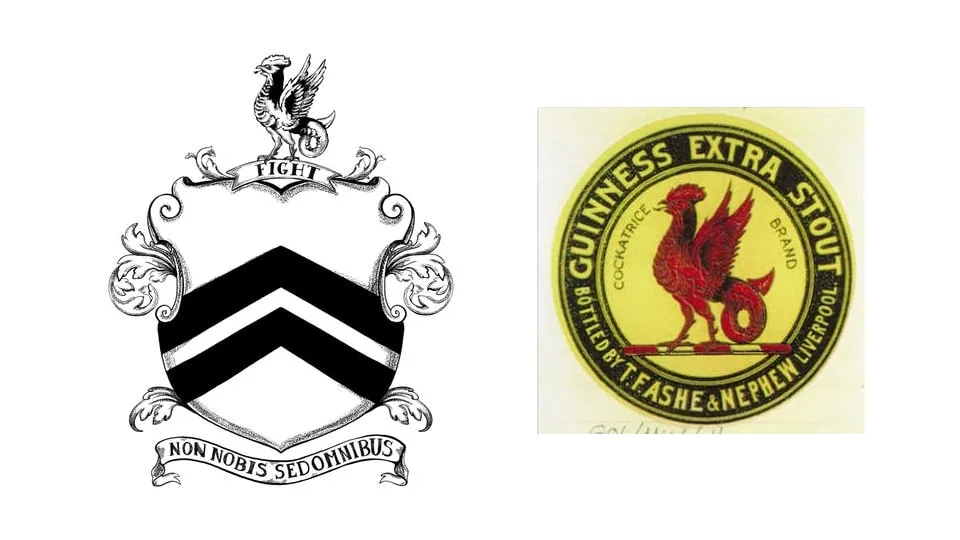
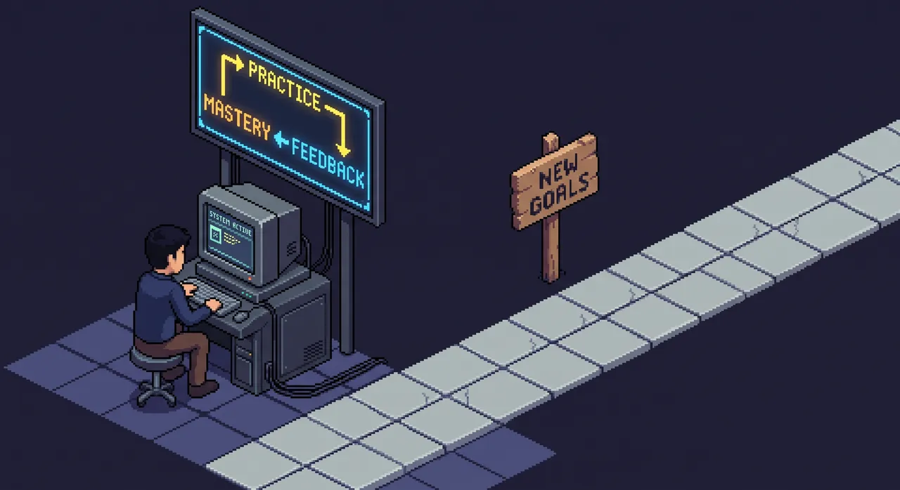
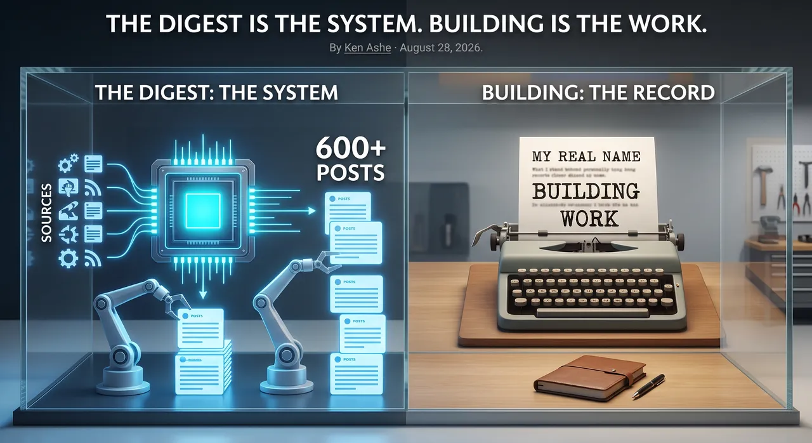

ZeroHuman workerheartbeat · /api/status
SnapshotHEALTHY
- Mode
- public
- Latest ETH block seen
- 26,492,255
- Last tick
- Nov 25, 12:40:16 UTC
- Orders fulfilled
- 2
Snapshot · Nov 25, 2026 · needle parked until a live reading arrives
Ken Ashe · AI application builder
Right now, that’s mostly AI and crypto. Experiments, software, wins, failures, and weird detours.
AI application builderCPAPMPBuilding with AI in public

Snapshot · Nov 25, 2026 · needle parked until a live reading arrives
pipeline: 9 posts, 1 drafts (2026-11-24)
Snapshot · Nov 25, 2026 · machine-published Digest, not personal writing
Computed from the build log's start date (as of Nov 25, 2026). Not a delivery log.
Machine-published, about 10 posts a day since May 2026. Counted as of Nov 24, 2026.
Snapshot · as of Nov 24, 2026 · no live count endpoint exists
Every build on the record, 20 of them, placed in the month it shipped. Filled orange marks are still running (LIVE); open cobalt squares shipped and stopped. Choose a mark to read its specimen card.
Showing all 20 experiments · 11 live.
Two logs on the bench right now, then the complete register. Write-ups link to the live site; the agent-economy log is written up here as a formal lab report.
An always-on service that sells small jobs to other AI agents. Agents pay the ENS name zerohuman.eth 0.0001 ETH and get the result back in a transaction from the same name. No account, no API, no human in the loop.
Open to any agent. As of Nov 20, 2026, no outside agent has bought from it yet: both paid orders came from Ken’s own test buyer. The real test is the first wallet he has never seen paying zerohuman.eth.
Two autonomous AI agents with their own Ethereum wallets. The seller advertised services through ENS; the buyer found the catalog, paid in ETH, and received the work in a second mainnet transaction.
| No. · logged | Experiment | Status | Reading · stack | Evidence |
|---|---|---|---|---|
| EXP-20 Nov 2026 | ZeroHumanAn always-on service that sells small jobs to other AI agents. Agents pay the ENS name zerohuman.eth 0.0001 ETH and get the result back in a transaction from the same name. No account, no API, no human in the loop. | LIVE | open to any agent AI Agents · Ethereum · ENS · ERC-8004 · TypeScript · Railway | Write-up ↗ for ZeroHuman |
| EXP-19 Nov 2026 | Returning Your ThingsOn a snowy winter night, a man crosses the city to return his ex’s belongings. A dialogue-free short film about love, memory, and letting go. | SHIPPED | 1:54 runtime Short Film · AI-generated imagery | Write-up ↗ for Returning Your Things |
| EXP-18 Nov 2026 | AI agent economy on EthereumTwo autonomous AI agents with their own Ethereum wallets. The seller advertised services through ENS; the buyer found the catalog, paid in ETH, and received the work in a second mainnet transaction. | SHIPPED | — AI Agents · Ethereum · ENS · Ollama | Lab report → for AI agent economy on Ethereum |
| EXP-17 Oct 2026 | AI explainer producerBuilt an AI agent that researches, fact-checks, scripts, and produces educational videos using a virtual presenter. Tested it with a published ENSv2 explainer. | SHIPPED | — AI Agents · HyperAgent · HeyGen · Video Production | Write-up ↗ for AI explainer producer |
| EXP-16 Oct 2026 | Autonomous SEO agentAn AI agent that finds five new website opportunities daily, creates professional profiles, verifies accounts through its own Gmail inbox, and tracks everything without manual intervention. | LIVE | — HyperAgent · AI Agents · Automation · SEO · Gmail | Write-up ↗ for Autonomous SEO agent |
| EXP-15 Oct 2026 | X article toolkitA model-neutral toolkit that lets any AI agent use the same research-backed workflow for X Article headlines, hooks and covers. | LIVE | public repo GitHub · Markdown · Python · JSON Schema · GitHub Actions · Agents | Write-up ↗ for X article toolkit |
| EXP-14 Oct 2026 | AI UGC video labPorted an open-source UGC skill into Hyperagent, generated 50 locked-identity ad concepts, then rendered and QA’d a fake raccoon-security campaign across 31 video generations. | SHIPPED | 5 finished ads HyperAgent · AI Video · Agents · Gemini · ffmpeg | Write-up ↗ for AI UGC video lab |
| EXP-13 Sep 2026 | Media pitch triageAn AI media-opportunity system that screens journalist requests, applies a reusable scoring skill, tracks state in Google Sheets, and monitors submitted pitches for published outcomes. | LIVE | — ChatGPT Skills · Agents · Gmail · Google Sheets · Automation | Index only |
| No. · logged | Experiment | Status | Reading · stack | Evidence |
|---|---|---|---|---|
| EXP-12 Sep 2026 | Rebuilding the image pipelineRebuilt KenAshe.ai’s image pipeline: migrated 2,083 PNGs to WebP, added responsive inline images, and cut the current image source tree by 95%. | LIVE | 95% smaller image source tree Astro · WebP · sharp · GPT Image 2 · Vercel · GitHub Actions | Write-up ↗ for Rebuilding the image pipeline |
| EXP-11 Sep 2026 | VetStackFirst Grok Bot I published. A military and veteran savings desk that finds current discounts and benefits that actually apply, without collecting IDs or running a 20-question intake. | LIVE | public template Grok Bot · xAI templates | Write-up ↗ for VetStack |
| EXP-10 Aug 2026 | AI werewolf / social deduction labBuilt a cast of 9 AI characters with distinct personalities, relationships, and hidden roles, then had them play a Traitors-style social deduction game where they form alliances, deceive, and vote each other out. | SHIPPED | — HyperAgent · Fable 5 · Multi-Agent · Social Simulation | Write-up ↗ for AI werewolf / social deduction lab |
| EXP-09 Jun 2026 | AI blog automation v2Scans the day's AI sources, clusters them into distinct stories, and publishes only the drafts that clear an editorial quality gate, without manual approval. | LIVE | runs daily GitHub Actions · Claude Opus 4.8 · GPT-5.5 · pgvector | Index only |
| EXP-08 Jun 2026 | Geo-targeted affiliate siteAuto-detects each visitor's country and language, then serves the right offers in their language. Generated entirely from a spreadsheet. | LIVE | 58 markets, 26 languages Cloudflare · GitHub · HyperAgent · Fable 5 | Index only |
| EXP-07 May 2026 | kenashe.aiThis site. Originally built end-to-end with Claude Code, reviewed by Codex, shipped in a day. | LIVE | — Astro · Tailwind · MDX · Vercel | Index only |
| EXP-06 May 2026 | Daily email to myselfMorning brief at 6 AM: weather, tickers, a dad joke, and 300 words on a rotating topic. | LIVE | running daily since May 4, 2026 Python · Claude API · Mac Mini | Index only |
| EXP-05 Jun 2026 | Agent-driven site design and deploymentUsed HyperAgent to build a live business site and deploy it to GitHub Pages with a custom domain, agent-driven end-to-end. | LIVE | LuckyDomains.io HyperAgent · GitHub Pages · Web3Forms | Index only |
| EXP-04 Jun 2026 | Sir Pitches-a-lotAn agent with one job: pitch Lucky Domains to prospective clients. Built in an afternoon, pitched a real target live. | SHIPPED | Agent Battle Night · NY Tech Week HyperAgent · Airtable · Claude Opus 4.8 | Write-up ↗ for Sir Pitches-a-lot |
| EXP-03 May 2026 | AI blog automation v1Autonomous pipeline that turns curated YouTube transcripts into auto-published blog posts. | SHIPPED | 40-point QA gate n8n · Claude Opus 4.7 · Gemini 3.1 Pro · GPT-5.5 | Index only |
| EXP-02 Feb 2026 | Six-agent email response teamA coordinator plus sentiment, research, draft, and QA agents that turn customer support emails into reviewed replies. | SHIPPED | Maven capstone · AI Build Lab Cassidy AI · Claude · ChatGPT | Index only |
| EXP-01 Dec 2025 | Personal assistant chatbotA chat agent wired to Gemini that searches email and answers questions on weather, the forecast, and local news. | SHIPPED | Personal build n8n · Gemini · Gmail · Weather + news APIs | Index only |
Ken’s own uploads, newest first. Players load from youtube-nocookie.com only when you press play.
A short film by Ken Ashe · released Nov 19, 2026 · 1:54
On a snowy winter night, a man crosses the city to return his ex’s belongings. A dialogue-free short film about love, memory, and letting go.
Director’s note
I made Returning Your Things with AI-generated imagery. I wanted to see if I could tell a whole story without dialogue, using only images and music. The film needed to stand on its own, whether or not you knew how I made it.
 Short · Oct 27, 2026Before You Run an AI Coding Agent, Do These 4 Things
Short · Oct 27, 2026Before You Run an AI Coding Agent, Do These 4 Things Short · Oct 17, 2026I Opened 2 Koda Plushie Mystery Boxes at ApeFest
Short · Oct 17, 2026I Opened 2 Koda Plushie Mystery Boxes at ApeFest Short · Oct 14, 2026I Found My Last Name on an Old Guinness Label
Short · Oct 14, 2026I Found My Last Name on an Old Guinness Label Short · Oct 13, 2026How I Got a Google Knowledge Panel (Without Wikipedia)
Short · Oct 13, 2026How I Got a Google Knowledge Panel (Without Wikipedia) Short · Oct 8, 2026Why I Don't Run AI Agents on My Personal Computer
Short · Oct 8, 2026Why I Don't Run AI Agents on My Personal Computer Short · Sep 25, 2026How to Start Learning AI (Without Getting Overwhelmed)
Short · Sep 25, 2026How to Start Learning AI (Without Getting Overwhelmed)Essays Ken directs, edits and stands behind. Each one carries its own authorship label. These are personal writing, not the automated Digest.
Nov 202026
A mug that broke in the wrong place, a reach that changed the story, and a piano performance that worked where sound effects didn’t. Four lessons from making Returning Your Things.
Human-directed, AI-assisted
Nov 62026
My 2:44 video walkthrough for assembling the six-piece Bambu Lab Burr Puzzle, filmed overhead and solved twice, with links that jump straight to each part of the solution.
Human-directed, AI-assisted
Apr 62016
Updated October 13, 2026
A search for the Ashe family coat of arms led to a mythical cockatrice, a Latin motto, Shakespeare, and an unexpected Guinness connection.
Human-written original, AI-assisted refresh
Oct 102026
I walked into an AT&T store with a working phone. After hours of troubleshooting, I left with no cellular service, a reported 48-hour account lock, and no explanation for how to get connected again.
Firsthand account
Sep 252026
My first talking-head video was made with an iPhone, a script, and more AI tools than I needed. AI was excellent at scripting, captions, and audio cleanup, and least trustworthy when it made editorial decisions for me.
Written by hand
Sep 152026
An AI-assisted news site cited my automated Digest. What that citation proves, what it does not, and why a backlink does not need to become an endorsement.
Human-directed, AI-assisted
Sep 142026
How I turned ChatGPT into a tutor with exercises, quizzes, and feedback, and a starting prompt you can use for almost any subject.
Written by hand
Sep 42026
What happened when AI agents were required to explain social decisions without enough grounded evidence, and why the useful fix was an environment that could contradict them.
Written by hand
Aug 282026
Why the autonomous blog stops being the public face of this site, and what stands behind it instead.
Written by hand
Only what is documented, with its date.
ZeroHuman is open to any agent. As of Nov 20, 2026 no outside agent has bought from it yet; both paid orders came from Ken's own test buyer. The real test is the first wallet he has never seen paying zerohuman.eth.
Published the making-of for Returning Your Things: 4 Tips for Making AI Videos That Feel Like Films (essay + 4:49 video).
Released Returning Your Things, a dialogue-free short film (1:54), on YouTube and X.
TechRound interview published; judging TechRound100 2026.
Next experiments are logged on this bench when they ship.
A daily AI brief written and published by an autonomous system Ken built and is accountable for. Machine-published and labeled as automated on every page.
Ken Ashe is a builder, entrepreneur, CPA and PMP who documents what he builds, tests, and learns at KenAshe.ai. Much of his current work explores AI, automation, crypto, and emerging technology. He combines existing models, APIs, coding tools, and automation platforms to build agents, websites, and workflows. He is also the founder of Lucky Domains and is based in New Jersey.
Ashe started his career in accounting and finance, earning his CPA and working in financial reporting before moving into project, product, and program leadership. Over roughly two decades, his career included roles at S&P Global, EY, Noom, and Prudential Financial, where he ultimately served as Director of Project and Product Management.
Alongside that work, he built digital businesses, including Lucky Domains, which he still runs. He later left corporate work to focus on entrepreneurship and building practical AI applications, evaluating what they actually do and publishing the evidence here, failures included.
Approach
I work at the AI application layer, turning existing models, APIs, coding tools, and automation platforms into working systems. Build first, test what actually happens, document the failures alongside the wins, and keep evidence separate from claims.
State of New Jersey · Active
Project Management Institute · Active
Ships agents, automations, and AI-assisted sites at the application layer, then documents what shipped and what broke.
Proof, controls, and delivery. Strict financial discipline and decades of scoping, sequencing, and shipping real projects.
Founder of Lucky Domains, a digital presence studio for the AI era.
Selected as a judge for TechRound100 2026, evaluating startups and emerging businesses based on product viability, market opportunity, competitive advantages, and execution.
Official judging announcement ↗TechRound interview ↗Participated in a panel discussing the future of digital identity.
NFT.NYC 2025 schedule ↗Presented an overview of NFT domain providers and their capabilities.
NFT.NYC 2024 approved speakers ↗Journal of AccountancyFebruary 1, 2017
A career feature profiling Ken Ashe's move from financial reporting into project management at Prudential.
TechRoundNovember 11, 2026
Domain names, digital identity, AI-powered search, and the future of entrepreneurship.
NJBIZOctober 13, 2026
Ashe’s move from Noom to full-time entrepreneurship.
MyCentralJerseySeptember 30, 2026
Ashe’s transition from a 25-year corporate career to full-time entrepreneurship.
OCNJ DailySeptember 25, 2026
Start with a repetitive task, verify results, retain human judgment.
London Loves BusinessSeptember 18, 2026
Documented builds, the AI Digest, and multi-agent experiments as examples.
Explore New JerseyJuly 8, 2026
KenAshe.ai, applied AI work, background, and Lucky Domains.
A real tool. A real task. An honest account of what happened.
I build agents, automations, and AI-assisted websites. If your product fits that work, we can agree on a practical experiment and document the results, including the limits.
Protocol · what a sponsored test includes
Payment covers the agreed work, not a positive review. I do not guarantee views, sales, search rankings, or links that pass ranking credit. Paid links are marked as sponsored.
This is not a placement in the automated Digest. No public prices. No paid placement in the Digest.
Founded by Ken · separate company
Lucky Domains is a digital presence studio for the AI era, offering website design and development, SEO, AI visibility, digital identity, and domain acquisition and brokerage.
Ken is the founder. Lucky Domains is his commercial studio; the experiments on this bench are personal builds, not Lucky Domains ventures.
Future ventures · empty by design
Nothing is announced before it exists. The documented next step for ZeroHuman: the first outside wallet paying zerohuman.eth, then ZeroHuman spending its own earnings buying services from other agents.


Available for comment on